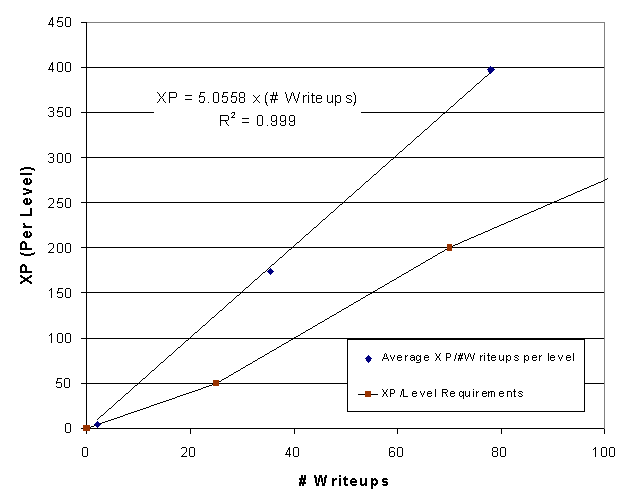

OCTOBER 2, 2001 UPDATE
First of all, let me address the motivation for increasing the XP requirements
for leveling up, as I wrote on the first page.
As the data has shown, the average noder reaches the XP requirements
long before reaching the Writeups requirement (and as a result, more Noding
for Numbers to achieve the higher level). Increasing the XP requirements may
encourage better quality node writing.
As I wrote before, the average noder receives on average about 14 times
the number of writeups in XP, and this appears to be a good criterion
for level requirements:
XP required = 14 x (#Writeups required)
BUT... there is one issue that needs to be addressed. On July
30, 2001, there was a change in the C! reward
system, that could have significant impact on the Level Advancement
system; especially for the lower levels. Since we now only receive 3XP
for a C!, it may be more difficult for new noders to achieve the XP requirements.
Thus, I ran some more tests: I collected data for all the noders who
created an account after July 30, 2001. These are new noders (Level
1-3) who never received 10XP for C!ed writeups (but 3XP instead). As a
result, this is a nice control group, whose progress I could monitor
from now on.
Again I calculated the average (median) number of writeups these noders
have in their respective Level-class (Level 1 through 3). I also calculated
the average (median) XP they accumulated since creating their accounts.
These results can be seen in the following plot:

Similar to the previous Average XP/Writeups plot, the noders who signed
up after July 30, 2001 also accumulate more XP than necessary for leveling
up, although not as much as the entire noder base. There are two possible
explanations for this:
- These noders are all NEW noders. If we compare this to the entire nodebase,
there are many low-level noders who have been with E2 for very long, and
thus have accumulated high XP over time
- These noders gain lower XP due to the lower C! rewards (since July 30,
2001)
There is no prior statistical data available to rule out either possible
cause. Furthermore, since the noders in this analysis are all new noders
(2 months or less), there is no data available yet for Level 4 noders
and higher. This suggests that it would be unwise to make any major
changes to the XP/Level advancement system until more data is available.
Alternative Level Advancement System
At the risk of repeating myself once too often, I have also calculated
the MNFP for the noders who signed up after July 30,2001. The following
figure shows the averages for Level 1, 2, and 3; the markers indicate the
average (median) number of writeups for these levels.

So the data indicates that the MNFP accumulates proportional with the
number of writeups. Yeah... for 3 datapoints: big deal. But
please take a look again at the plot I made of
the ENTIRE noder base up to Level 11. The relationship scales remarkably
well up to higher levels. In fact, if we compare the slopes of the two
curves, they are both around 4 (3.96, vs. 4.35). MNFP appears to
be a fair method of evaluating a noder's progress. It is not dependent
on Voting-XP, but only on the number of writeups, and their
reputations.
Based on the data we could set the level-advancement requirements as
follows:
MNFP required = 4 x ("Current" #Writeups
Required)
We could drop the #Writeups requirement in this system, since it is
already accounted for in the MNFP:
MNFP = (Median Node Reputation+1) x #Nodes.
| Level |
MNFP Required |
| 1 |
0 |
| 2 |
75* |
| 3 |
280 |
| 4 |
600 |
| 5 |
1000 |
| 6 |
1520 |
| 7 |
2060 |
| 8 |
2800 |
| 9 |
3600 |
| 10 |
4860 |
| 11 |
7200 |
| 12 |
10800 |
| 13 |
18000 |
*Set to 3 x current #writeups required to promote leveling-up
How does this work out in numbers:
- Jill Noder, has 25 writeups, 50% of those have a reputation of 2 or higher.
His MNFP=(1+2)*25=75, so he levels up.
- Joe Noder has 50 writeups, and 50% of those have a reputation 0 or higher
(his GTKY nodes scored rather miserably). His MNFP=(1+0)*50=50, so he must
node some more, and preferably improve his existing writeups.
- Barbara Noder consistently writes beautiful, well thought-out nodes. She
gains a lot of votes on her writeups; half of her writeups have a reputation
of 6 or higher. Because of the high quality of her nodes, she already levels
up to level 3 at 40 writeups, and to Level 4 at 86 writeups.
- Bob Noder consistently writes nodes with a median reputation of 3. He doesn't
level up as fast as Barbara Noder: level 3 at 70 writeups, and level 4
at 150 writeups.
- Peter Noder has 240 writeups at a median reputation of 3. His MNFP=(3+1)*240=960,
for a Level 4. He decides to nuke 20 of his negative-reputation writeups
that are terrible beyond repair: as a result of removing the junk, his
median reputation goes up to 4. His MNFP=(4+1)*220=1100. By virtue
of removing his poor writeups, Peter actually levels up to Level 5.
Impact
Does this mean that everyone will change their levels? I calculated
the effects that changing to this level system has on all the noder's levels: For 90%
of all the noders, nothing changes. Approximately 6% of the noders
go up, one or more levels. Approximately 465 noders,
or 4% go down one or more levels. Only 45 noders go down by two
or more levels.
Among the noders that "level up" significantly we find esteemed writers,
such as Junkpile, Toasterleavings, Cletus the Foetus, Jinmyo, riverrun,
Footprints, (darsi), sneff...
| Level Change |
# Noders |
Comments |
| -5 |
2 |
one user has 50% of his 400 writeups with rep -1 or lower
the other is a high level noder with MNF=0 |
| -4 |
2 |
Level 7/8 that drop to level 3/4. |
| -3 |
5 |
|
| -2 |
36 |
|
| -1 |
420 |
|
| 0 |
11213 |
|
| 1 |
622 |
|
| 2 |
80 |
|
| 3 |
23 |
|
| 4 |
7 |
Halspal, Junkpile, Toasterleavings, Cletus the Foetus, Jinmyo, Riverrun,
Footprints |
| 5 |
2 |
one of these is a bug in the datafile
the other is DMan(...) |
| 6 |
1 |
"everyone" |
I understand the reluctance to make major changes to the XP/Level
system. On the other hand, I believe this system more accurately
rewards good noding, so perhaps it is something look at more closely.
Previous Page
*** Professor Pi - October 2, 2001
***